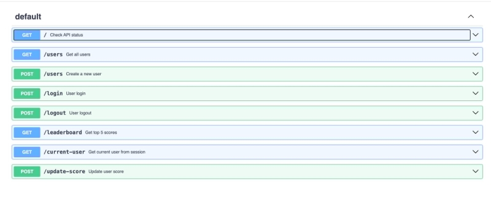

FrOW (Fruits On The Web)
Authors: Beschieru Marius and Butnariu Robert
Table of contents
Introduction
1.1 Abstract
FrOW (Fruits on the Web) is an interactive web game that combines fun with learning, perfect for primary school children. The game challenges players to match fruit cards across increasingly difficult rounds, enhancing their memory and attention. With a colorful and friendly design, FrOW provides an engaging and enjoyable experience for all players.
1.2 Purpose
The purpose of this document is to define the software requirements for developing the educational web game FrOW (Fruits On The Web). It covers both the user interface and the backend, detailing how the game should look, feel, and function. This guide ensures that all aspects of the game, from how users interact with it to how it operates behind the scenes, are clearly described and aligned.
1.3 Document Conventions
The text in this document is formatted according to the typography and styling standards recommended within the scholarly HTML format. Alignment, font size, and style ensure a consistent and easily readable presentation.
1.4 Intended Audience
This document is intended for both the team involved in the 'FrOW (Fruits On The Web)' project and individuals outside the team who are interested in the project documentation.
1.5 Product Scope
The purpose of this application is to provide a visually engaging and intuitive platform for elementary school students to sharpen their minds while discovering different types of fruits. Here are the key objectives of the software:
- User-Friendly Interface: Develop a simple and intuitive interface that is easy for young children to navigate and understand.
- Visually Appealing Design: Incorporating visually appealing graphics and animations to enhance the user experience.
- Motivational Elements: Include features like scores and a leaderboard to motivate children to continue playing and become better.
Overall Description
2.1 Product Perspective
The 'FrOW (Fruits On The Web)' project is conceived as a new product and is not an extension of any existing products within the context of elementary school education.
2.2 Operating Environment
The web application 'FrOW (Fruits On The Web)' can be accessed and used on any operating system (Windows, macOS, Linux) and on any modern web browser, including Google Chrome, Mozilla Firefox, Microsoft Edge, and Safari. There are no special hardware requirements for using the application, and it can be accessed from any device with internet access, including desktops, laptops, tablets, and mobile devices, thanks to its responsive interface.
2.3 User Documentation
The user documentation for 'FrOW (Fruits On The Web)' is the scholarly HTML document accompanying the application. It serves as a comprehensive guide for users, providing detailed instructions on navigation, features, and troubleshooting.
User Interface Features
3.1 User Registration and Login:
Registration: Users can create accounts with basic credentials (username, email, password) to save their progress and access the game.

Login: Registered users can log in into their account securely to access their personalized game experience.

3.2 Home Page
The home page serves as the main landing page for the application, providing users with a brief description of the game, giving players an overview of what to expect. Prominently displayed is the "Play" button, which users can click to start the game and dive into the fun of matching fruit cards.

In addition to this, the main page includes a navigation bar (navbar) at the top. This navbar allows users to easily navigate between key sections of the website:
- Home: Returns to the main page where the game description and the "Play" button are located.
- Leaderboard: Takes users to a page showing the top scores and rankings, fostering a competitive environment.
- Contact Us: Directs users to a contact form where they can submit questions, feedback, or issues to the project team.
- Logout: Allows users to securely log out of their account, ensuring their game data and progress are protected.

3.3 Contact Us Page
The contact page features a simple form where users can provide their name, email address, and a message or description of their issue. This allows them to submit their questions, suggestions, or problems to the project team or application administrators.

3.4 Leaderboard Page
The leaderboard page displays the top scores and rankings of players who have achieved the highest scores in the game. This feature adds a competitive element to the game, motivating users to improve their performance and climb the leaderboard ranks.

3.5 Game Page
The game page is the core of the application, where users can play the interactive matching game. The game consists of a grid of face-down cards, each containing an image of a fruit. Players must flip over two cards at a time to find matching pairs of fruits. When a player successfully matches two cards, they remain face-up, and the player earns points. The game continues until all pairs are matched, and the player's score is displayed at the end of the round.

3.6 Responsive Design
The application is designed with a responsive layout that adapts to different screen sizes and devices. This ensures that users can access and enjoy the game on desktops, laptops, tablets, and mobile phones without any loss of functionality or user experience.

Server Features
4.1 Database
The application uses a database to store user account information, game progress, and leaderboard data. The database is designed to be secure, reliable, and scalable to accommodate a growing number of users and game data.
4.2 User Authentication
The application implements user authentication to ensure that only registered users can access their accounts and game data. This feature helps protect user privacy and data security.
4.3 Game Logic
The server-side logic of the application manages the game rules, scoring, and progression. It ensures that the game functions correctly, tracks user progress, and updates the leaderboard with the latest scores.
4.4 Data Management
The server handles data management tasks such as storing and retrieving user information, game progress, and leaderboard data. It ensures that data is stored securely and efficiently to provide a seamless user experience.
4.5 API REST
The application uses a RESTful API to communicate between the client-side and server-side components. This API allows for seamless data exchange and interaction between the user interface and the backend services.
4.6 RSS Feed
The application provides an RSS feed feature that allows users to subscribe to updates, news, and announcements related to the game. This feature keeps users informed and engaged with the latest developments and events.
4.7 Technology Used
The application is built using modern web technologies, including HTML, CSS, JavaScript, Node.js, and RESTful APIs. These technologies enable the development of a dynamic, interactive, and secure web application that meets the requirements of the project.
Application Diagram

Revision History
| Date | Changes | Version |
|---|---|---|
| 2024-04-13 | Initial draft | 1.0 |
| 2024-04-14 | Added styles | 1.1 |
| 2024-04-15 | Second Version | 1.2 |
| 2024-06-24 | Final version | 1.3 |